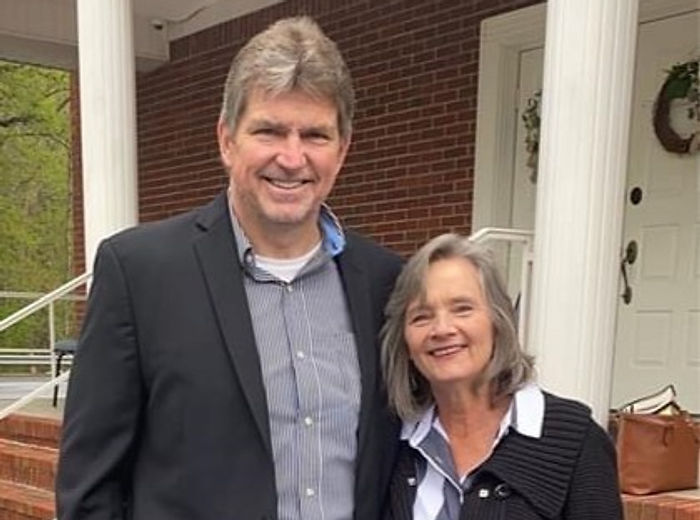

Share Your Visit Story
If you would like to submit approved photos from church events, contact us.
Browse snapshots of worship, fellowship, and the mountain setting around Zion Hill Baptist Church.
Photos shown here can be replaced with updated congregational images at any time.




If you would like to submit approved photos from church events, contact us.